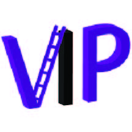
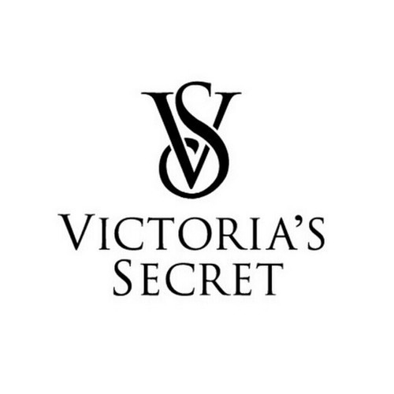
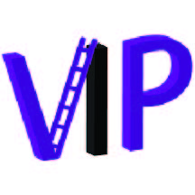
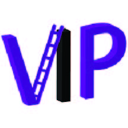
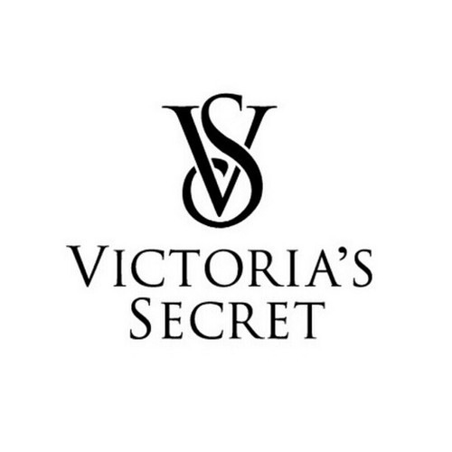
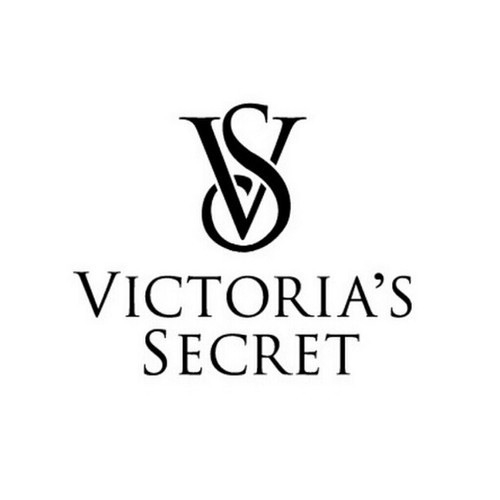

About
Experience
Skills
Gallery
Contact
The Things I've Done:
I have been to Hackathon's such as:
Music Accessibility Hackathon
Flawless Hackathon
NYU Hacks
SBU Hacks at Stony Brook


Experience/Extracurriculars:
Girls Who Code at NYU
Vice President, September 2018 to Present
Plan monthly meetings to work on our coding skills
Network with other women in the computer science industry
Mixed Reality - VIP
Teammate, September 2018 to Present
Turning an oscilloscope into virtual reality
Using C# and Unity along with HoloLens
Future Stars Summer Camp
Teacher/Counselor, June - August 2018
Taught Children between the ages of 8-14 the concepts of coding
Assisted in their projects using Python, Java, and C++ languages
Victoria's Secret
General Sales Associate, July 2016 to January 2018
Assisted customers with finding products and checking out
Met the customer's needs in person and over the phone
 

 
